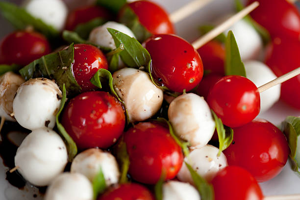

Caprese skewers

Best Summer Caprise Skewers
Mini mozzarella cheese balls are skewered with fragrant basil leaves
and juicy cherry tomatoes then drizzled with tangy-sweet balsamic reduction to create this perfectly poppable appetizer.
They will FLY off the platter.
Ingredients
- 20 grape tomatoes
- 10 ounces mozzarella virgin olive oil
- 2 tablespoons extra virgin olive oil
- 1 pinch ground black pepper
- 20 toothpicks
Steps:
- Gather all ingredients
- Toss tomatoes, mozzarella cheese, olive oil, basil, salt,
and pepper together in a bowl until well coated
- Skewer one tomato and one piece of mozzarella on each toothpick